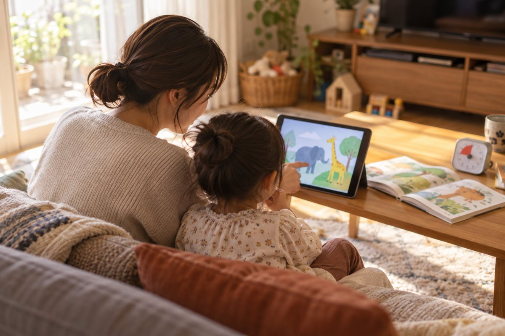

動画で歌を覚えたり、ゲームをきっかけに好きなものが増えたり。スマートフォンやタブレットは、子どもの楽しみや学びにも使える道具です。忙しい時間に少し助けてもらうこともあるでしょう。
気にかけたいのは、「何を見ているか」「どう終えるか」「生活の時間が足りているか」。使うことを一律に否定せず、家庭で調整できる方法を考えます。
メディアコントロールは、親子で使い方を整えること
ここでいうメディアコントロールは、テレビ、動画、ゲーム、スマートフォンなどを、内容・時間・場所・使う目的に合わせて調整することです。保護者が端末やアプリに制限をかける「ペアレンタルコントロール」も、そのための手段の一つです。
同じ30分でも、親子で動物の動画を見て話す時間と、おすすめ動画を次々に見続ける時間では、経験することが違います。時間の記録だけでなく、見た後の子どもの様子や、親子の会話も振り返ってみましょう。
米国小児科学会は、子どもの特徴、内容、気持ちの落ち着け方、ほかの活動への影響、対話という五つの観点からメディア利用を考える「5つのC」を紹介しています。「何分だったか」に加えて、家庭での使い方を見るための考え方です。出典：米国小児科学会の5つのC
1．まずは「何を見ているか」を大人も知る
子ども向けの見た目でも、広告が多い、怖い場面が急に出てくる、危険な行動を面白がるなど、家庭で選び直したくなる内容はあります。タイトルやサムネイルだけで判断せず、最初に大人が中身を確認しましょう。
- 子どもの年齢や理解に合う内容か。
- 暴力、怖い描写、まねをすると危ない行動が含まれないか。
- 広告や購入への誘導が多くないか。
- 知らない人とのチャット、写真投稿、位置情報の共有ができるか。
- 見終わる区切りがあるか。自動で次の動画へ進まないか。
小さな子どもには、保護者が選んだ動画やアプリを使える環境を用意する方法があります。動画の自動再生を切ったり、見せたいものを先に選んだりすると、次に何が出るかを子ども任せにせずに済みます。
一緒に見られるときは、「この動物、絵本にもいたね」「この場面はどう思った？」と短く話してみてください。毎回、教材のように質問する必要はありません。画面の中の出来事を、散歩や工作、絵本など普段の遊びにつなげることもできます。
参考：こども家庭庁の保護者向けリーフレット、米国小児科学会の幼児向けメディアガイド。

2．時間は、睡眠・食事・体を動かす遊びから考える
「今日は何分まで？」を決めるときは、先に寝る時刻、食事、園や学校の準備、体を動かす遊び、家族と話す時間を見ます。動画やゲームのために寝るのが遅くなったり、食事や翌朝の支度が毎日ずれたりするなら、使う時間帯も見直してみましょう。
「学習用だから、時間は気にしなくてよい」とも言い切れません。調べ物、オンラインでの会話、動画、ゲームでは目的が違いますが、どれも一日の中の時間を使います。テレビ、タブレット、スマートフォンを別々に数えている場合は、合計も確認すると実態が分かります。
年齢に合わせて、関わり方を変える
乳児期は、対面でのやり取りや実物に触れる経験を中心にします。米国小児科学会の2026年の解説でも、18か月未満の子どもは現実のやり取りからよく学ぶとしています。
幼児期は大人が内容を選び、使う場所や終わり方を一緒に決めます。小学生になったら、宿題や友だちとの関係も含めて、本人の意見を聞きながら約束を見直します。年齢の違うきょうだいに、同じルールをそのまま当てはめなくても構いません。
全国の家庭に共通する「ここまでなら必ず問題ない」という時間を、この記事で決めることはしません。時間の枠は持ちつつ、年齢とその日の生活、使った後の様子を一緒に見て調整しましょう。参考：米国小児科学会・2026年の方針解説
3．「やめなさい」の前に、終わり方を決めておく
楽しい途中で急に画面を消されたら、子どもが残念に感じるのも自然です。始める前に「この動画が終わったらおしまい」「タイマーが鳴ったら、続きは明日」と区切りを伝えます。長さが分からない連続動画より、終点のある内容の方が約束を作りやすくなります。
声かけの例
始める前は「今日はこの一本にしよう」。終わりが近づいたら「あと少しで終わるね。次は絵本とお風呂、どっちからにする？」。終えたら「続きが気になるね。また明日見よう」と、残念な気持ちにも一言添えます。
これは家庭で試すための例で、必ずすんなり終えられる方法ではありません。ゲームなら途中保存の場所を確認するなど、内容に合わせて区切りを考えます。
タイマーが鳴るたびに延長するより、使う前に無理のない区切りを相談しておく方が、約束を共有しやすくなります。毎回うまくいかないときは、子どもの我慢だけに任せず、始める時刻や動画の長さ、次にすることを変えてみましょう。
泣いたり退屈したりするたびに端末だけで落ち着かせる習慣になっていたら、抱っこ、会話、絵本、外の景色を見るなど、ほかの過ごし方も少しずつ増やします。忙しい日もあるからこそ、親子で選べる方法を少しずつ増やしていけたらよいですね。
4．毎回の声かけを、端末の設定にも手伝ってもらう
約束を全部、親の声かけだけで守ろうとすると大変です。端末側で利用できる時間やアプリ、購入、コンテンツの範囲を設定すると、日々の管理を補助できます。
| 機器・サービス | 確認すること |
|---|---|
| iPhone・iPad | スクリーンタイムの利用時間・スケジュール、コンテンツとプライバシーの制限。子ども用アカウントと保護者の管理設定も確認。 |
| Androidなど | Googleファミリーリンクの利用時間、アプリごとの制限。管理対象や使える機能は機種・年齢・アカウントにより確認。 |
| 動画・ゲーム | 子ども向けプロフィール、自動再生、年齢区分、チャット、購入の承認など。サービスごとに設定を確認。 |
Appleのスクリーンタイム案内、Googleのアプリ利用時間の案内に手順があります。画面名は更新されることがあるので、操作するときは公式の案内に沿ってください。
設定をした後は、実際に子どもが使う端末で動きを試します。例えばファミリーリンクでは「時間無制限」にしたアプリが一日の上限に含まれないことがあります。制限を設定したつもりでも、例外のアプリや別の端末が残っていないか見ておきましょう。
フィルタリングや年齢設定ですべての不適切な内容を防げるわけではありません。「怖いものが出たら閉じて知らせてね」「知らない人に名前や写真を送らないよ」と、困ったときに大人へ言える約束も作ります。
5．家庭のルールは、少なく始めて見直す
最初から十項目も決めるより、生活の中で守りたいことを二つか三つ選びます。下の表をたたき台にして、家族で相談してみてください。
| 決めること | 話し合う例 |
|---|---|
| 見るもの | 大人が確認した動画を、使う前に一緒に選ぶ。 |
| いつ・どれくらい | おやつの後に短い動画を一本。例えば15分程度から試し、生活に合うか見直す。この数字は医学的な安全基準ではありません。 |
| 使う場所 | 大人が様子を見られるリビング。食事中や寝る前の時間は別の過ごし方にする。 |
| 終わり方 | 始める前に区切りを決める。終えた後にすることも選んでおく。 |
| 例外の日 | 長距離移動や体調が悪い日などは、その日の約束を先に伝える。翌日からは普段の使い方に戻す。 |
| 見直す日 | 一週間試し、子どもが困ったことと大人が困ったことを聞く。 |
大人も「ごはんの間はスマートフォンを置く」「話しかけられたら、いったん画面から目を離す」など、できることを一つ共有すると、子どもだけの決まりにならずに済みます。
見直すときは、時間と暮らしの両方を見る
「何を見たか」「どのくらい使ったか」「終えるときに何が難しかったか」を短くメモすると、調整する場所が分かります。寝る時刻がずれるなら時間帯を、次々に見たがるなら自動再生や内容の選び方を、終えられないなら区切りを見直す、といった具合です。
睡眠や食事、登園・登校、家族との関わりに支障が続く場合は、園や学校の先生、かかりつけ医など身近な相談先に普段の様子を伝えてください。困っていることを一緒に整理してもらうための相談です。
親子で楽しめるものは大切にしながら、必要な生活時間も残しておく。毎日完璧に守ることを目標にせず、使い方を少しずつ調整していきましょう。
子どもの生活リズムを考えるときは、慣らし保育と仕事復帰前の準備や園への連絡帳で伝えることも参考にしてください。